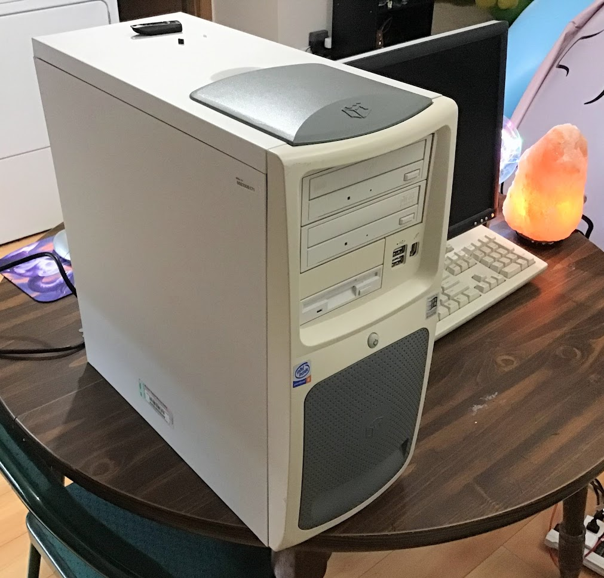

overviewi have a huge soft spot for the gateway performance 1500. it was my childhood computer and kickstarted my lifelong interest in computers and technology - it introduced me to the endless possibilies of the internet, website design, programming, weird software, and digital art. unfortunately, the specific computer i owned as a kid is long gone now, but a super generous friend of mine gave me another one that's basically identical to the one i used to have! it's fully functional, but it needs a bit of TLC (and replacement fans). check back later for more thoughts as i get this guy set up. |

specifications
|